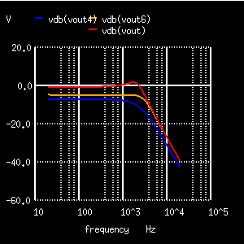
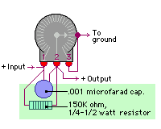

The graph to the left shows a simulation of a P bass pickup through a 20' cable into an amp. The red line shows the volume and tone controls at max. The blue line shows the volume control at half resistance (not turned half way). The orange line shows the volume control at half resistance with the treble bleed mod.Notice that, without the treble bleed, you lose treble as you reduce the volume. The treble bleed allows the treble to pass through and restores the curve.
Treble bleed image from Stewart - MacDondald.
Back to Bass